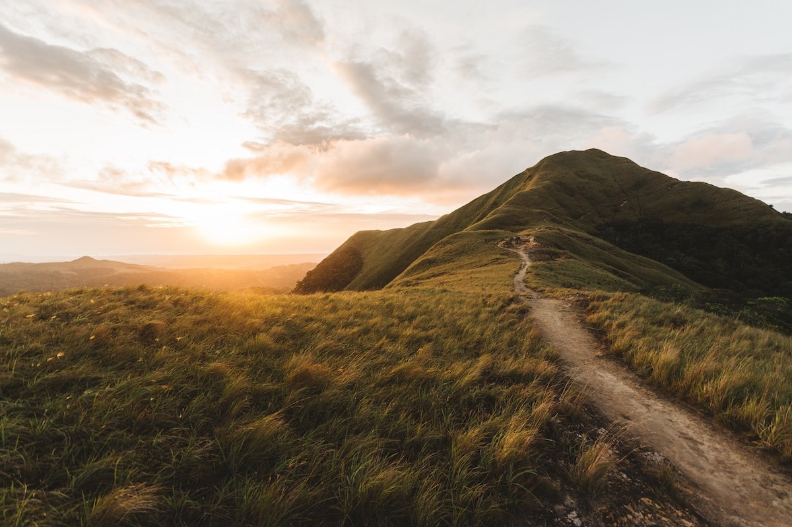
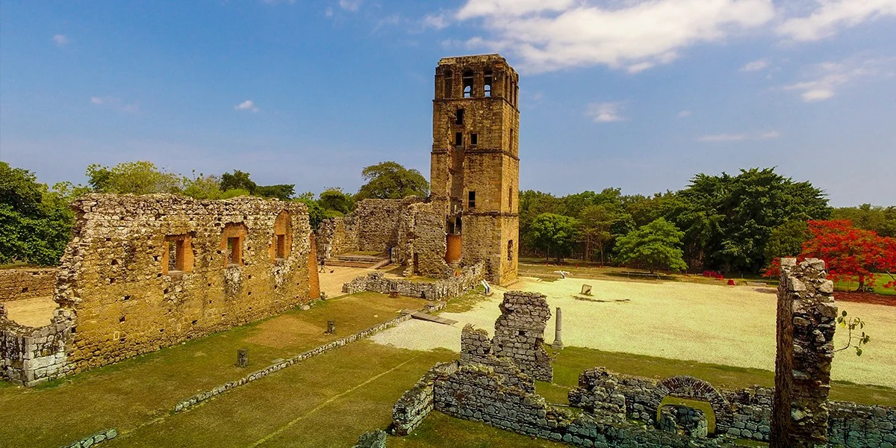
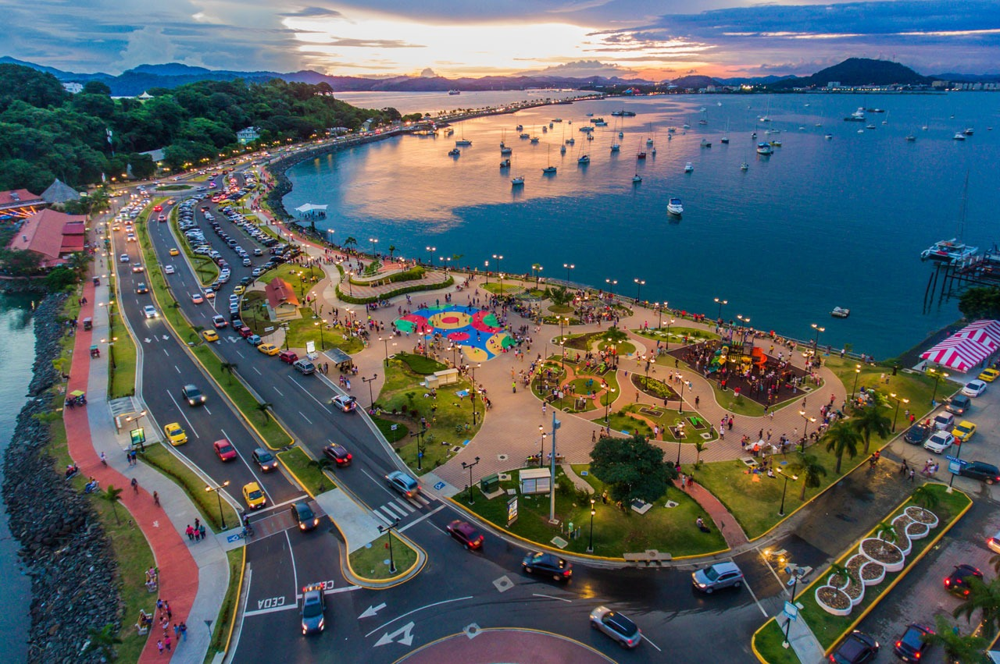
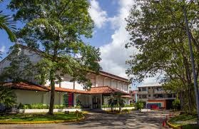
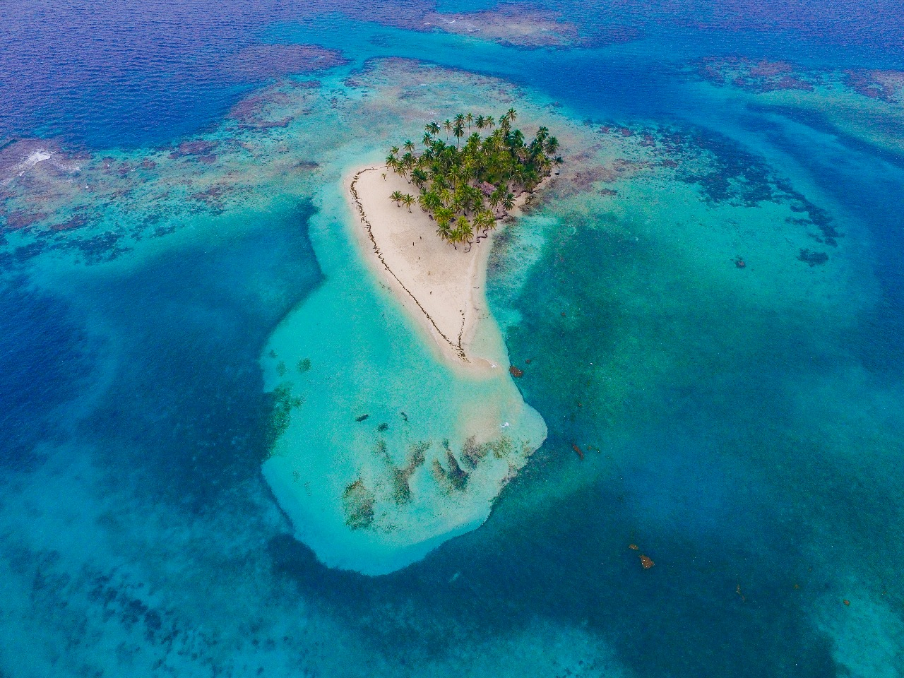
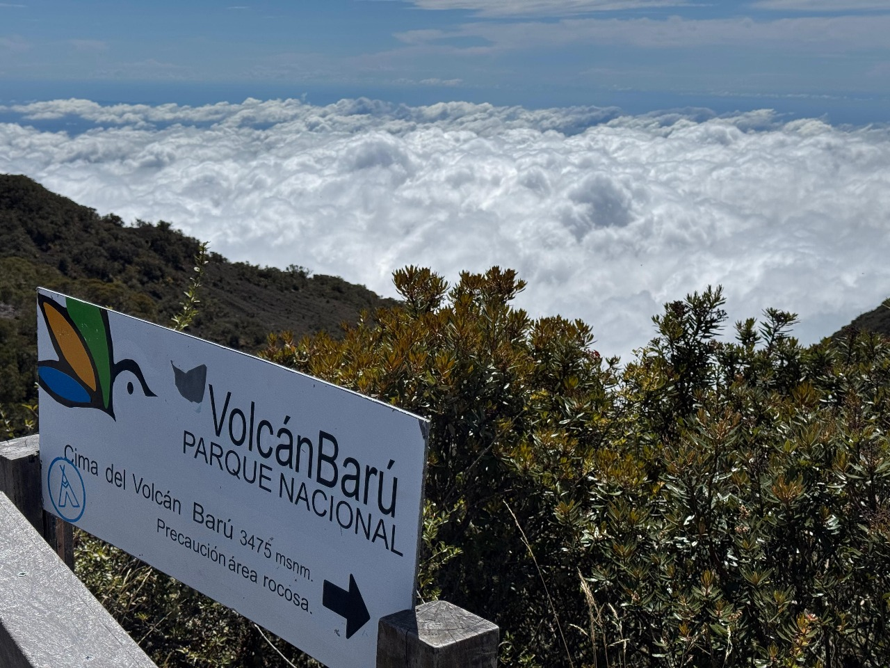

Descubre El Valle de Antón, un encantador asentamiento situado dentro del cráter de un volcán que no está activo. Esta zona es productiva, abundantemente diversa en fauna y flora, y repleta de oportunidades de aventura en el lado verde de la costa del Pacífico, en la región de Coclé. En el año 2024, la Organización Mundial del Turismo premió a El Valle de Antón dentro de su programa Best Tourism Villages. Esta distinción resalta la belleza cultural y natural de destinos notables, así como la importancia de preservarlos a través de un turismo responsable.
Panamá La Vieja

Panamá La Vieja es el primer establecimiento español en la costa del océano Pacífico de América. Este sitio de patrimonio mundial ocupa 28,5 hectáreas situadas a 20 km hacia el este de la ciudad de Panamá e incluye antiguas estructuras de valor excepcional como: La Torre de la Catedral, El Puente del Rey, El Puente del Matadero, así como las Ruinas de: Los Conventos de la Concepción, San Juan de Dios, San Francisco, La Merced, La Compañía de Jesús, El Cabildo, entre otros.
Causeway de Amador

Entre los años 1920 y 1980, se erigieron construcciones defensivas en este lugar para salvaguardar la apertura sur de la ruta interoceánica, formando parte de una instalación militar conocida inicialmente como Fuerte Grant y posteriormente como Fuerte Amador. Actualmente, muchos de estos edificios funcionan como lugares para restaurantes, tiendas y clubes donde tanto locales como turistas se divierten. Desde este punto se puede observar la silueta de la ciudad de Panamá y la desembocadura del canal en el océano Pacífico, ya sea caminando, trotando, patinando, montando en bicicleta, alquilando scooters eléctricos o simplemente descansando. Desde esta área zarpan las embarcaciones hacia la Isla Taboga y el archipiélago de Las Perlas.
Museo de Arte Contemporáneo

El Museo de Arte Contemporáneo de Panamá, conocido comúnmente como MAC Panamá, es el único museo dedicado al arte contemporáneo en el país. Esta es una entidad no lucrativa de carácter no gubernamental, la cual posee personalidad jurídica y su sede se encuentra en la Calle San Blas, en la Avenida de los Mártires, en el área de Ancón, en la ciudad de Panamá. La institución se estableció en el año 1962 con el nombre de Instituto Panameño de Arte y en 1983 asumió su actual denominación. El museo tiene como misión ser un espacio cultural que facilite la difusión del conocimiento y fomente la valoración del arte contemporáneo, incentivando el crecimiento cultural y creativo. Sus colecciones comprenden más de 700 piezas realizadas por artistas panameños y latinoamericanos de los siglos XX y XXI.
Islas San Blas

Las Islas de San Blas (también conocidas como Guna Yala) son un archipiélago de 365 islas en el Mar Caribe de Panamá, administradas por el pueblo indígena Guna, que constituye un destino turístico popular conocido por su belleza natural, playas de arena blanca, aguas cristalinas y la oportunidad de experimentar una cultura antigua. Las islas son gestionadas por los Guna y el turismo se ha convertido en una parte importante de su economía, ofreciendo una experiencia cultural auténtica y paisajes vírgenes.
Volcán Baru

El Barú se considera la montaña más elevada de Panamá, alcanzando los 3475 metros de altura. Esta montaña se encuentra en tres distritos: Boquerón, Boquete y Tierras Altas, ubicados en la provincia de Chiriquí. Investigaciones han determinado que su última erupción ocurrió entre 400 y 550 años atrás. Se cree que su altitud original superaba los 4600 metros, y su cumbre estaba cubierta de nieve eterna, que colapsó debido a una erupción lateral, lo que disminuyó su altura a la que tiene hoy. Este evento generó un gran deslizamiento de tierra que transportó lodo y escombros, de los cuales todavía se pueden ver restos en la región.